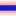
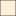
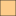

<!doctype html>
<html lang="en">
    <head>
        <meta charset="utf-8">
        <meta http-equiv="X-UA-Compatible" content="IE=edge">
        <meta name="viewport" content="initial-scale=1,user-scalable=no,maximum-scale=1,width=device-width">
        <meta name="mobile-web-app-capable" content="yes">
        <meta name="apple-mobile-web-app-capable" content="yes">
        <link rel="stylesheet" href="css/leaflet.css">
        <link rel="stylesheet" href="css/L.Control.Layers.Tree.css">
        <link rel="stylesheet" href="css/qgis2web.css">
        <link rel="stylesheet" href="css/fontawesome-all.min.css">
        <style>
        html, body, #map {
            width: 100%;
            height: 100%;
            padding: 0;
            margin: 0;
        }
        </style>
        <title></title>
    </head>
    <body>
        <div id="map">
        </div>
        <script src="js/qgis2web_expressions.js"></script>
        <script src="js/leaflet.js"></script>
        <script src="js/L.Control.Layers.Tree.min.js"></script>
        <script src="js/multi-style-layer.js"></script>
        <script src="js/leaflet-svg-shape-markers.min.js"></script>
        <script src="js/leaflet.rotatedMarker.js"></script>
        <script src="js/leaflet.pattern.js"></script>
        <script src="js/leaflet-hash.js"></script>
        <script src="js/Autolinker.min.js"></script>
        <script src="js/rbush.min.js"></script>
        <script src="js/labelgun.min.js"></script>
        <script src="js/labels.js"></script>
        <script src="data/GENTRIFICATIONSCORES19912016_1.js"></script>
        <script src="data/GREENSPACE_2.js"></script>
        <script src="data/BICIBUS_3.js"></script>
        <script src="data/UEJSTRUGGLES_4.js"></script>
        <script>
        var map = L.map('map', {
            zoomControl:true, maxZoom:28, minZoom:1
        }).fitBounds([[41.30692044404189,1.9145025353470728],[41.4844232612069,2.4368400907440093]]);
        var hash = new L.Hash(map);
        map.attributionControl.setPrefix('<a href="https://github.com/tomchadwin/qgis2web" target="_blank">qgis2web</a> &middot; <a href="https://leafletjs.com" title="A JS library for interactive maps">Leaflet</a> &middot; <a href="https://qgis.org">QGIS</a>');
        var autolinker = new Autolinker({truncate: {length: 30, location: 'smart'}});
        function removeEmptyRowsFromPopupContent(content, feature) {
         var tempDiv = document.createElement('div');
         tempDiv.innerHTML = content;
         var rows = tempDiv.querySelectorAll('tr');
         for (var i = 0; i < rows.length; i++) {
             var td = rows[i].querySelector('td.visible-with-data');
             var key = td ? td.id : '';
             if (td && td.classList.contains('visible-with-data') && feature.properties[key] == null) {
                 rows[i].parentNode.removeChild(rows[i]);
             }
         }
         return tempDiv.innerHTML;
        }
        document.querySelector(".leaflet-popup-pane").addEventListener("load", function(event) {
          var tagName = event.target.tagName,
            popup = map._popup;
          // Also check if flag is already set.
          if (tagName === "IMG" && popup && !popup._updated) {
            popup._updated = true; // Set flag to prevent looping.
            popup.update();
          }
        }, true);
        var bounds_group = new L.featureGroup([]);
        function setBounds() {
        }
        map.createPane('pane_OpenStreetMap_0');
        map.getPane('pane_OpenStreetMap_0').style.zIndex = 400;
        var layer_OpenStreetMap_0 = L.tileLayer('https://tile.openstreetmap.org/{z}/{x}/{y}.png', {
            pane: 'pane_OpenStreetMap_0',
            opacity: 1.0,
            attribution: '',
            minZoom: 1,
            maxZoom: 28,
            minNativeZoom: 0,
            maxNativeZoom: 19
        });
        layer_OpenStreetMap_0;
        map.addLayer(layer_OpenStreetMap_0);
        function pop_GENTRIFICATIONSCORES19912016_1(feature, layer) {
            var popupContent = '<table>\
                    <tr>\
                        <th scope="row">91_96_GENT</th>\
                        <td>' + (feature.properties['91_96_GENT'] !== null ? autolinker.link(feature.properties['91_96_GENT'].toLocaleString()) : '') + '</td>\
                    </tr>\
                </table>';
            layer.bindPopup(popupContent, {maxHeight: 400});
            var popup = layer.getPopup();
            var content = popup.getContent();
            var updatedContent = removeEmptyRowsFromPopupContent(content, feature);
            popup.setContent(updatedContent);
        }

        function style_GENTRIFICATIONSCORES19912016_1_0(feature) {
            if (feature.properties['91_16_GENT'] >= -0.042000 && feature.properties['91_16_GENT'] <= 0.088000 ) {
                return {
                pane: 'pane_GENTRIFICATIONSCORES19912016_1',
                opacity: 1,
                color: 'rgba(35,35,35,1.0)',
                dashArray: '',
                lineCap: 'butt',
                lineJoin: 'miter',
                weight: 1.0, 
                fill: true,
                fillOpacity: 1,
                fillColor: 'rgba(254,240,217,1.0)',
                interactive: true,
            }
            }
            if (feature.properties['91_16_GENT'] >= 0.088000 && feature.properties['91_16_GENT'] <= 0.205600 ) {
                return {
                pane: 'pane_GENTRIFICATIONSCORES19912016_1',
                opacity: 1,
                color: 'rgba(35,35,35,1.0)',
                dashArray: '',
                lineCap: 'butt',
                lineJoin: 'miter',
                weight: 1.0, 
                fill: true,
                fillOpacity: 1,
                fillColor: 'rgba(253,204,138,1.0)',
                interactive: true,
            }
            }
            if (feature.properties['91_16_GENT'] >= 0.205600 && feature.properties['91_16_GENT'] <= 0.366000 ) {
                return {
                pane: 'pane_GENTRIFICATIONSCORES19912016_1',
                opacity: 1,
                color: 'rgba(35,35,35,1.0)',
                dashArray: '',
                lineCap: 'butt',
                lineJoin: 'miter',
                weight: 1.0, 
                fill: true,
                fillOpacity: 1,
                fillColor: 'rgba(252,141,89,1.0)',
                interactive: true,
            }
            }
            if (feature.properties['91_16_GENT'] >= 0.366000 && feature.properties['91_16_GENT'] <= 0.592200 ) {
                return {
                pane: 'pane_GENTRIFICATIONSCORES19912016_1',
                opacity: 1,
                color: 'rgba(35,35,35,1.0)',
                dashArray: '',
                lineCap: 'butt',
                lineJoin: 'miter',
                weight: 1.0, 
                fill: true,
                fillOpacity: 1,
                fillColor: 'rgba(227,74,51,1.0)',
                interactive: true,
            }
            }
            if (feature.properties['91_16_GENT'] >= 0.592200 && feature.properties['91_16_GENT'] <= 4.320000 ) {
                return {
                pane: 'pane_GENTRIFICATIONSCORES19912016_1',
                opacity: 1,
                color: 'rgba(35,35,35,1.0)',
                dashArray: '',
                lineCap: 'butt',
                lineJoin: 'miter',
                weight: 1.0, 
                fill: true,
                fillOpacity: 1,
                fillColor: 'rgba(179,0,0,1.0)',
                interactive: true,
            }
            }
        }
        map.createPane('pane_GENTRIFICATIONSCORES19912016_1');
        map.getPane('pane_GENTRIFICATIONSCORES19912016_1').style.zIndex = 401;
        map.getPane('pane_GENTRIFICATIONSCORES19912016_1').style['mix-blend-mode'] = 'normal';
        var layer_GENTRIFICATIONSCORES19912016_1 = new L.geoJson(json_GENTRIFICATIONSCORES19912016_1, {
            attribution: '',
            interactive: true,
            dataVar: 'json_GENTRIFICATIONSCORES19912016_1',
            layerName: 'layer_GENTRIFICATIONSCORES19912016_1',
            pane: 'pane_GENTRIFICATIONSCORES19912016_1',
            onEachFeature: pop_GENTRIFICATIONSCORES19912016_1,
            style: style_GENTRIFICATIONSCORES19912016_1_0,
        });
        bounds_group.addLayer(layer_GENTRIFICATIONSCORES19912016_1);
        function pop_GREENSPACE_2(feature, layer) {
            var popupContent = '<table>\
                    <tr>\
                        <th scope="row">NAME</th>\
                        <td>' + (feature.properties['NAME'] !== null ? autolinker.link(feature.properties['NAME'].toLocaleString()) : '') + '</td>\
                    </tr>\
                    <tr>\
                        <th scope="row">YEAR</th>\
                        <td>' + (feature.properties['YEAR'] !== null ? autolinker.link(feature.properties['YEAR'].toLocaleString()) : '') + '</td>\
                    </tr>\
                    <tr>\
                        <th scope="row">TYPE</th>\
                        <td>' + (feature.properties['TYPE'] !== null ? autolinker.link(feature.properties['TYPE'].toLocaleString()) : '') + '</td>\
                    </tr>\
                    <tr>\
                        <th scope="row">HECTARES</th>\
                        <td>' + (feature.properties['HECTARES'] !== null ? autolinker.link(feature.properties['HECTARES'].toLocaleString()) : '') + '</td>\
                    </tr>\
                </table>';
            layer.bindPopup(popupContent, {maxHeight: 400});
            var popup = layer.getPopup();
            var content = popup.getContent();
            var updatedContent = removeEmptyRowsFromPopupContent(content, feature);
            popup.setContent(updatedContent);
        }

        function style_GREENSPACE_2_0() {
            return {
                pane: 'pane_GREENSPACE_2',
                opacity: 1,
                color: 'rgba(35,35,35,1.0)',
                dashArray: '',
                lineCap: 'butt',
                lineJoin: 'miter',
                weight: 1.0, 
                fill: true,
                fillOpacity: 1,
                fillColor: 'rgba(69,116,40,1.0)',
                interactive: true,
            }
        }
        map.createPane('pane_GREENSPACE_2');
        map.getPane('pane_GREENSPACE_2').style.zIndex = 402;
        map.getPane('pane_GREENSPACE_2').style['mix-blend-mode'] = 'normal';
        var layer_GREENSPACE_2 = new L.geoJson(json_GREENSPACE_2, {
            attribution: '',
            interactive: true,
            dataVar: 'json_GREENSPACE_2',
            layerName: 'layer_GREENSPACE_2',
            pane: 'pane_GREENSPACE_2',
            onEachFeature: pop_GREENSPACE_2,
            style: style_GREENSPACE_2_0,
        });
        bounds_group.addLayer(layer_GREENSPACE_2);
        function pop_BICIBUS_3(feature, layer) {
            var popupContent = '<table>\
                    <tr>\
                        <th scope="row">LINEA</th>\
                        <td>' + (feature.properties['LINEA'] !== null ? autolinker.link(feature.properties['LINEA'].toLocaleString()) : '') + '</td>\
                    </tr>\
                    <tr>\
                        <th scope="row">PARADAS</th>\
                        <td>' + (feature.properties['PARADAS'] !== null ? autolinker.link(feature.properties['PARADAS'].toLocaleString()) : '') + '</td>\
                    </tr>\
                </table>';
            layer.bindPopup(popupContent, {maxHeight: 400});
            var popup = layer.getPopup();
            var content = popup.getContent();
            var updatedContent = removeEmptyRowsFromPopupContent(content, feature);
            popup.setContent(updatedContent);
        }

        function style_BICIBUS_3_0() {
            return {
                pane: 'pane_BICIBUS_3',
                opacity: 1,
                color: 'rgba(26,29,227,1.0)',
                dashArray: '',
                lineCap: 'round',
                lineJoin: 'round',
                weight: 7.0,
                fillOpacity: 0,
                interactive: true,
            }
        }
        map.createPane('pane_BICIBUS_3');
        map.getPane('pane_BICIBUS_3').style.zIndex = 403;
        map.getPane('pane_BICIBUS_3').style['mix-blend-mode'] = 'normal';
        var layer_BICIBUS_3 = new L.geoJson(json_BICIBUS_3, {
            attribution: '',
            interactive: true,
            dataVar: 'json_BICIBUS_3',
            layerName: 'layer_BICIBUS_3',
            pane: 'pane_BICIBUS_3',
            onEachFeature: pop_BICIBUS_3,
            style: style_BICIBUS_3_0,
        });
        bounds_group.addLayer(layer_BICIBUS_3);
        function pop_UEJSTRUGGLES_4(feature, layer) {
            var popupContent = '<table>\
                    <tr>\
                        <td colspan="2">' + (feature.properties['name'] !== null ? autolinker.link(feature.properties['name'].toLocaleString()) : '') + '</td>\
                    </tr>\
                    <tr>\
                        <th scope="row">GRPS_INV</th>\
                        <td>' + (feature.properties['GRPS_INV'] !== null ? autolinker.link(feature.properties['GRPS_INV'].toLocaleString()) : '') + '</td>\
                    </tr>\
                    <tr>\
                        <th scope="row">video_link</th>\
                        <td>' + (feature.properties['video_link'] !== null ? autolinker.link(feature.properties['video_link'].toLocaleString()) : '') + '</td>\
                    </tr>\
                    <tr>\
                        <th scope="row">pdf_CAT</th>\
                        <td>' + (feature.properties['pdf_CAT'] !== null ? autolinker.link(feature.properties['pdf_CAT'].toLocaleString()) : '') + '</td>\
                    </tr>\
                    <tr>\
                        <th scope="row">pdf_ENG</th>\
                        <td>' + (feature.properties['pdf_ENG'] !== null ? autolinker.link(feature.properties['pdf_ENG'].toLocaleString()) : '') + '</td>\
                    </tr>\
                    <tr>\
                        <th scope="row">SUMMARY</th>\
                        <td>' + (feature.properties['SUMMARY'] !== null ? autolinker.link(feature.properties['SUMMARY'].toLocaleString()) : '') + '</td>\
                    </tr>\
                    <tr>\
                        <td colspan="2">' + (feature.properties['RESUMEN'] !== null ? autolinker.link(feature.properties['RESUMEN'].toLocaleString()) : '') + '</td>\
                    </tr>\
                    <tr>\
                        <td colspan="2">' + (feature.properties['BLURB'] !== null ? autolinker.link(feature.properties['BLURB'].toLocaleString()) : '') + '</td>\
                    </tr>\
                </table>';
            layer.bindPopup(popupContent, {maxHeight: 400});
            var popup = layer.getPopup();
            var content = popup.getContent();
            var updatedContent = removeEmptyRowsFromPopupContent(content, feature);
            popup.setContent(updatedContent);
        }

        function style_UEJSTRUGGLES_4_0() {
            return {
                pane: 'pane_UEJSTRUGGLES_4',
                radius: 11.2,
                opacity: 1,
                color: 'rgba(5,50,227,1.0)',
                dashArray: '',
                lineCap: 'butt',
                lineJoin: 'miter',
                weight: 2.0,
                fill: true,
                fillOpacity: 1,
                fillColor: 'rgba(255,255,255,1.0)',
                interactive: true,
            }
        }
        function style_UEJSTRUGGLES_4_1() {
            return {
                pane: 'pane_UEJSTRUGGLES_4',
                radius: 6.46154,
                opacity: 1,
                color: 'rgba(26,29,227,1.0)',
                dashArray: '',
                lineCap: 'butt',
                lineJoin: 'miter',
                weight: 1.0,
                fill: true,
                fillOpacity: 1,
                fillColor: 'rgba(227,221,36,1.0)',
                interactive: true,
            }
        }
        map.createPane('pane_UEJSTRUGGLES_4');
        map.getPane('pane_UEJSTRUGGLES_4').style.zIndex = 404;
        map.getPane('pane_UEJSTRUGGLES_4').style['mix-blend-mode'] = 'normal';
        var layer_UEJSTRUGGLES_4 = new L.geoJson.multiStyle(json_UEJSTRUGGLES_4, {
            attribution: '',
            interactive: true,
            dataVar: 'json_UEJSTRUGGLES_4',
            layerName: 'layer_UEJSTRUGGLES_4',
            pane: 'pane_UEJSTRUGGLES_4',
            onEachFeature: pop_UEJSTRUGGLES_4,
            pointToLayers: [function (feature, latlng) {
                var context = {
                    feature: feature,
                    variables: {}
                };
                return L.shapeMarker(latlng, style_UEJSTRUGGLES_4_0(feature));
            },function (feature, latlng) {
                var context = {
                    feature: feature,
                    variables: {}
                };
                return L.shapeMarker(latlng, style_UEJSTRUGGLES_4_1(feature));
            },
        ]});
        bounds_group.addLayer(layer_UEJSTRUGGLES_4);
        map.addLayer(layer_UEJSTRUGGLES_4);
        var baseMaps = {};
        var overlaysTree = [
            {label: ' UEJ STRUGGLES', layer: layer_UEJSTRUGGLES_4},
            {label: ' BICI BUS', layer: layer_BICIBUS_3},
            {label: ' GREEN SPACE', layer: layer_GREENSPACE_2},
            {label: 'GENTRIFICATION SCORES (1991-2016)<br /><table><tr><td style="text-align: center;"></td><td>-0,04 - 0,09</td></tr><tr><td style="text-align: center;"></td><td>0,09 - 0,21</td></tr><tr><td style="text-align: center;"></td><td>0,21 - 0,37</td></tr><tr><td style="text-align: center;"></td><td>0,37 - 0,59</td></tr><tr><td style="text-align: center;"></td><td>0,59 - 4,32</td></tr></table>', layer: layer_GENTRIFICATIONSCORES19912016_1},
            {label: "OpenStreetMap", layer: layer_OpenStreetMap_0},]
        var lay = L.control.layers.tree(null, overlaysTree,{
            //namedToggle: true,
            //selectorBack: false,
            //closedSymbol: '&#8862; &#x1f5c0;',
            //openedSymbol: '&#8863; &#x1f5c1;',
            //collapseAll: 'Collapse all',
            //expandAll: 'Expand all',
            collapsed: true,
        });
        lay.addTo(map);
        setBounds();
        var i = 0;
        layer_UEJSTRUGGLES_4.eachLayer(function(layer) {
            var context = {
                feature: layer.feature,
                variables: {}
            };
            layer.bindTooltip((layer.feature.properties['name'] !== null?String('<div style="color: #323232; font-size: 10pt; font-weight: bold; font-style: italic; font-family: \'Helvetica\', sans-serif;">' + layer.feature.properties['name']) + '</div>':''), {permanent: true, offset: [-0, -16], className: 'css_UEJSTRUGGLES_4'});
            labels.push(layer);
            totalMarkers += 1;
              layer.added = true;
              addLabel(layer, i);
              i++;
        });
        resetLabels([layer_UEJSTRUGGLES_4]);
        map.on("zoomend", function(){
            resetLabels([layer_UEJSTRUGGLES_4]);
        });
        map.on("layeradd", function(){
            resetLabels([layer_UEJSTRUGGLES_4]);
        });
        map.on("layerremove", function(){
            resetLabels([layer_UEJSTRUGGLES_4]);
        });
        </script>
    </body>
</html>
